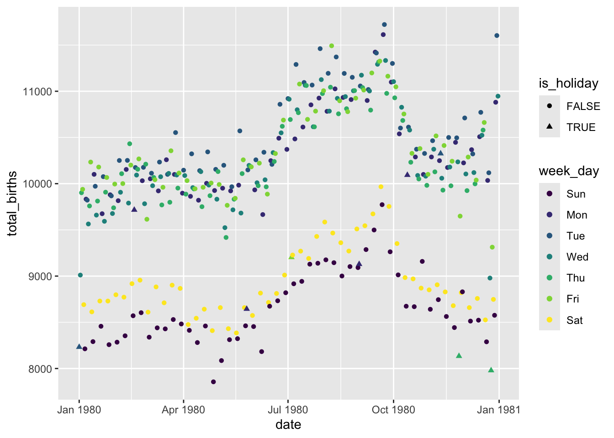

To connect the course enrollments to the students’ courses, try do a left_join(). You get an error! Identify the problem by reviewing the error message and the datasets we’re trying to join.
# eval = FALSE: don't evaluate this chunk when knitting. it produces an error.students_2 |>cross_join(enrollments_2)
Part b
The problem is that course name, the key or variable that links these two datasets, is labeled differently: class in the students_2 data and course in the enrollments_2 data. Thus we have to specify these keys in our code:
students_2 |>left_join(enrollments_2, by =c("class"="course"))
student class enrollment
1 D COMP 101 19
2 E BIOL 101 20
3 F POLI 101 NA
# The order of the keys is important:# by = c("left data key" = "right data key")# The order is mixed up here, thus we get an error:#students_2 |> #left_join(enrollments_2, by = c("course" = "class"))
Part c
Define another set of fake data which adds grade information:
# Add student grades in each coursestudents_3 <-data.frame(student =c("Y", "Y", "Z", "Z"),class =c("COMP 101", "BIOL 101", "POLI 101", "COMP 101"),grade =c("B", "S", "C", "A"))# Check it outstudents_3
student class grade
1 Y COMP 101 B
2 Y BIOL 101 S
3 Z POLI 101 C
4 Z COMP 101 A
# Add average grades in each courseenrollments_3 <-data.frame(class =c("ART 101", "BIOL 101","COMP 101"),grade =c("B", "A", "A-"),enrollment =c(20, 18, 19))# Check it outenrollments_3
class grade enrollment
1 ART 101 B 20
2 BIOL 101 A 18
3 COMP 101 A- 19
Try doing a left_join() to link the students’ classes to their enrollment info. Did this work? Try and figure out the culprit by examining the output.
students_3 |>right_join(enrollments_3)
student class grade enrollment
1 <NA> ART 101 B 20
2 <NA> BIOL 101 A 18
3 <NA> COMP 101 A- 19
Part d
The issue here is that our datasets have 2 column names in common: class and grade. BUT grade is measuring 2 different things here: individual student grades in students_3 and average student grades in enrollments_3. Thus it doesn’t make sense to try to join the datasets with respect to this variable. We can again solve this by specifying that we want to join the datasets using the class variable or key. What are grade.x and grade.y?
grade.x are the average grades, grade.y are the individual grades
students_3 |>left_join(enrollments_3, by =c("class"="class"))
student class grade.x grade.y enrollment
1 Y COMP 101 B A- 19
2 Y BIOL 101 S A 18
3 Z POLI 101 C <NA> NA
4 Z COMP 101 A A- 19
Exercise 2: More small practice
Before applying these ideas to bigger datasets, let’s practice identifying which join is appropriate in different scenarios. Define the following fake data on voters (people who have voted) and contact info for voting age adults (people who could vote):
# People who have votedvoters <-data.frame(id =c("A", "D", "E", "F", "G"),times_voted =c(2, 4, 17, 6, 20))voters
id times_voted
1 A 2
2 D 4
3 E 17
4 F 6
5 G 20
# Contact info for voting age adultscontact <-data.frame(name =c("A", "B", "C", "D"),address =c("summit", "grand", "snelling", "fairview"),age =c(24, 89, 43, 38))contact
name address age
1 A summit 24
2 B grand 89
3 C snelling 43
4 D fairview 38
Use the appropriate join for each prompt below. In each case, think before you type:
What dataset goes on the left?
What do you want the resulting dataset to look like? How many rows and columns will it have?
# 1. We want contact info for people who HAVEN'T votedcontact |>anti_join(voters, by =c("name"="id"))
name address age
1 B grand 89
2 C snelling 43
# 2. We want contact info for people who HAVE votedcontact |>semi_join(voters, by =c("name"="id"))
name address age
1 A summit 24
2 D fairview 38
# 3. We want any data available on each personcontact |>full_join(voters, by =c("name"="id"))
name address age times_voted
1 A summit 24 2
2 B grand 89 NA
3 C snelling 43 NA
4 D fairview 38 4
5 E <NA> NA 17
6 F <NA> NA 6
7 G <NA> NA 20
# 4. When possible, we want to add contact info to the voting rostervoters |>full_join(contact, by =c("id"="name"))
id times_voted address age
1 A 2 summit 24
2 D 4 fairview 38
3 E 17 <NA> NA
4 F 6 <NA> NA
5 G 20 <NA> NA
6 B NA grand 89
7 C NA snelling 43
Exercise 3: Bigger datasets
Let’s apply these ideas to some bigger datasets. In grades, each row is a student-class pair with information on:
If we pick out just 1 of these, we learn that some courses are cross-listed in multiple departments:
courses |>filter(sessionID =="session2047")
For our class size exploration, obtain the total enrollments in each sessionID, combining any cross-listed sections. Save this as courses_combined. NOTE: There’s no joining to do here!
courses_combined <- courses |>group_by(sessionID) |>summarize(enroll =sum(enroll))# Check that this has 1695 rows and 2 columnsdim(courses_combined)
[1] 1695 2
Part b
Let’s first examine the question of class size from the administration’s viewpoint. To this end, calculate the median class size across all class sections. (The median is the middle or 50th percentile. Unlike the mean, it’s not skewed by outliers.) THINK FIRST:
Which of the 2 datasets do you need to answer this question? One? Both?
If you need course information, use courses_combined not courses.
Do you have to do any joining? If so, which dataset will go on the left, i.e. which dataset includes your primary observations of interest? Which join function will you need?
courses_combined |>summarize(median(enroll))
# A tibble: 1 × 1
`median(enroll)`
<int>
1 18
Part c
But how big are classes from the student perspective? To this end, calculate the median class size for each individual student. Once you have the correct output, store it as student_class_size. THINK FIRST:
Which of the 2 datasets do you need to answer this question? One? Both?
If you need course information, use courses_combined not courses.
Do you have to do any joining? If so, which dataset will go on the left, i.e. which dataset includes your primary observations of interest? Which join function will you need?
The median class size varies from student to student. To get a sense for the typical student experience and range in student experiences, construct and discuss a histogram of the median class sizes experienced by the students.
# A tibble: 40 × 2
dept total_enroll
<chr> <int>
1 d 3046
2 j 2312
3 O 2178
4 M 2129
5 m 2105
6 D 2003
7 W 1960
8 q 1859
9 k 1824
10 F 1587
# ℹ 30 more rows
Part b
What’s the grade-point average (GPA) for each student?
CHALLENGE: Estimate the grade-point average for each department, and sort from low to high. NOTE: Don’t include cross-listed courses. Students in cross-listed courses could be enrolled under either department, and we do not know which department to assign the grade to. HINT: You’ll need to do multiple joins.
# A tibble: 39 × 2
dept gpa
<chr> <dbl>
1 o 3.08
2 M 3.10
3 K 3.17
4 G 3.18
5 B 3.2
6 J 3.22
7 T 3.23
8 b 3.25
9 F 3.30
10 d 3.31
# ℹ 29 more rows
Exercise 7: HOMEWORK PRACTICE
This exercise is on Homework 4, thus no solutions are provided. In Homework 4, you’ll be working with the Birthdays data:
library(mosaic)data("Birthdays")head(Birthdays)
state year month day date wday births
1 AK 1969 1 1 1969-01-01 Wed 14
2 AL 1969 1 1 1969-01-01 Wed 174
3 AR 1969 1 1 1969-01-01 Wed 78
4 AZ 1969 1 1 1969-01-01 Wed 84
5 CA 1969 1 1 1969-01-01 Wed 824
6 CO 1969 1 1 1969-01-01 Wed 100
You’ll also be exploring how the number of daily births is (or isn’t!) related to holidays. To this end, import data on U.S. federal holidays here. NOTE: lubridate::dmy() converts the character-string date stored in the CSV to a “POSIX” date-number.
adds a variable called is_holiday which is TRUE when the day is a holiday, and FALSE otherwise. NOTE: !is.na(x) is TRUE if column x is not NA, and FALSE if it is NA.
Print out the first 6 rows and confirm that your dataset has 366 rows (1 per day in 1980) and 7 columns. HINT: You’ll need to combine 2 different datasets.
# Confirm that daily_births_1980 has 366 rows and 7 columnsdim(daily_births_1980)
[1] 366 7
Part b
Plot the total number of babies born (y-axis) per day (x-axis) in 1980. Color each date according to its day of the week, and shape each date according to whether or not it’s a holiday. (This is a modified version of 3c!)
ggplot(daily_births_1980, aes(x = date, y = total_births, color = week_day, shape = is_holiday)) +geom_point()

Part c
Discuss your observations. For example: To what degree does the theory that there tend to be fewer births on holidays hold up? What holidays stand out the most?
Part d (OPTIONAL)
Some holidays stand out more than others. It would be helpful to label them. Use geom_text to add labels to each of the holidays. NOTE: You can set the orientation of a label with the angle argument; e.g., geom_text(angle = 40, ...).
Next steps
If you finish this all during class, you’re expected to work on Homework 4. If you’re done with Homework 4, you’re expected to play around with more TidyTuesday data. Mainly, and naturally, you’re expected to spend 112 class time on 112 :)
Source Code
---title: "Lesson 9 - Joining Data"number-sections: trueexecute: warning: falsefig-env: 'figure'fig-pos: 'h'fig-align: centercode-fold: false---::: {.callout-caution title="Learning Goals"}Understand how to *join* different datasets:- mutating joins: `left_join()`, `inner_join()` and `full_join()`- filtering joins: `semi_join()`, `anti_join()`:::::: {.callout-note title="Additional Resources"}For more information about the topics covered in this chapter, refer to the resources below:- [Demonstration of joining data (YouTube)](https://www.youtube.com/watch?v=MJDHRtwZhoM&feature=youtu.be) by Lisa Lendway- [Joings](https://r4ds.hadley.nz/joins) by Wickham, Çetinkaya-Rundel, & Grolemund- [Data wrangling on multiple tables](https://mdsr-book.github.io/mdsr2e/ch-join.html) by Baumer, Kaplan, and Horton:::\\\\## Exercises### Exercise 1: Where are my keys? {.unnumbered}#### Part a {.unnumbered}Define two new datasets, with different students and courses:```{r}library(tidyverse)students_2 <-data.frame(student =c("D", "E", "F"),class =c("COMP 101", "BIOL 101", "POLI 101"))# Check it outstudents_2enrollments_2 <-data.frame(course =c("ART 101", "BIOL 101", "COMP 101"),enrollment =c(18, 20, 19))# Check it outenrollments_2```To connect the course enrollments to the students' courses, try do a `left_join()`. You get an error! Identify the problem by reviewing the error message and the datasets we're trying to join.```{r eval = FALSE}# eval = FALSE: don't evaluate this chunk when knitting. it produces an error.students_2 |> cross_join(enrollments_2)```#### Part b {.unnumbered}The problem is that course name, the **key** or variable that links these two datasets, is labeled differently: `class` in the `students_2` data and `course` in the `enrollments_2` data. Thus we have to specify these keys in our code:```{r}students_2 |>left_join(enrollments_2, by =c("class"="course"))``````{r eval = FALSE}# The order of the keys is important:# by = c("left data key" = "right data key")# The order is mixed up here, thus we get an error:#students_2 |> #left_join(enrollments_2, by = c("course" = "class"))```#### Part c {.unnumbered}Define another set of fake data which adds grade information:```{r}# Add student grades in each coursestudents_3 <-data.frame(student =c("Y", "Y", "Z", "Z"),class =c("COMP 101", "BIOL 101", "POLI 101", "COMP 101"),grade =c("B", "S", "C", "A"))# Check it outstudents_3# Add average grades in each courseenrollments_3 <-data.frame(class =c("ART 101", "BIOL 101","COMP 101"),grade =c("B", "A", "A-"),enrollment =c(20, 18, 19))# Check it outenrollments_3```Try doing a `left_join()` to link the students' classes to their enrollment info. Did this work? Try and figure out the culprit by examining the output.```{r}students_3 |>right_join(enrollments_3)```#### Part d {.unnumbered}The issue here is that our datasets have *2* column names in common: `class` and `grade`. BUT `grade` is measuring 2 different things here: individual student grades in `students_3` and average student grades in `enrollments_3`. Thus it doesn't make sense to try to join the datasets with respect to this variable. We can again solve this by specifying that we want to join the datasets using the `class` variable or *key*. What are `grade.x` and `grade.y`?*grade.x are the average grades, grade.y are the individual grades*```{r}students_3 |>left_join(enrollments_3, by =c("class"="class"))```\\\\### Exercise 2: More small practice {.unnumbered}Before applying these ideas to bigger datasets, let's practice identifying which join is appropriate in different scenarios. Define the following fake data on `voters` (people who *have* voted) and `contact` info for voting age adults (people who *could* vote):```{r}# People who have votedvoters <-data.frame(id =c("A", "D", "E", "F", "G"),times_voted =c(2, 4, 17, 6, 20))voters# Contact info for voting age adultscontact <-data.frame(name =c("A", "B", "C", "D"),address =c("summit", "grand", "snelling", "fairview"),age =c(24, 89, 43, 38))contact```Use the appropriate join for each prompt below. In each case, think before you type:- What dataset goes on the left?- What do you want the resulting dataset to look like? How many rows and columns will it have?```{r}# 1. We want contact info for people who HAVEN'T votedcontact |>anti_join(voters, by =c("name"="id"))# 2. We want contact info for people who HAVE votedcontact |>semi_join(voters, by =c("name"="id"))# 3. We want any data available on each personcontact |>full_join(voters, by =c("name"="id"))# 4. When possible, we want to add contact info to the voting rostervoters |>full_join(contact, by =c("id"="name"))```\\\\### Exercise 3: Bigger datasets {.unnumbered}Let's apply these ideas to some bigger datasets. In `grades`, each row is a student-class pair with information on:- `sid` = student ID- `grade` = student's grade- `sessionID` = an identifier of the class section```{r}#| echo: false# Get rid of some duplicate rows!grades <-read.csv("https://mac-stat.github.io/data/grades.csv") |>distinct(sid, sessionID, .keep_all =TRUE)head(grades)```In `courses`, each row corresponds to a class section with information on:- `sessionID` = an identifier of the class section- `dept` = department- `level` = course level (eg: 100)- `sem` = semester- `enroll` = enrollment (number of students)- `iid` = instructor ID```{r}#| echo: falsecourses <-read.csv("https://mac-stat.github.io/data/courses.csv")head(courses)```Use R code to take a quick glance at the data.```{r}# How many observations (rows) and variables (columns) are there in the grades data?dim(grades)# How many observations (rows) and variables (columns) are there in the courses data?dim(courses)```\\\\### Exercise 4: Class size {.unnumbered}How big are the classes?#### Part a {.unnumbered}Before digging in, note that some courses are listed twice in the `courses` data:```{r}courses |>count(sessionID) |>filter(n >1)```If we pick out just 1 of these, we learn that some courses are cross-listed in multiple departments:```{r eval = FALSE}courses |> filter(sessionID == "session2047")```For our class size exploration, obtain the *total* enrollments in each `sessionID`, combining any cross-listed sections. Save this as `courses_combined`. NOTE: There's no joining to do here!```{r} courses_combined <- courses |>group_by(sessionID) |>summarize(enroll =sum(enroll))# Check that this has 1695 rows and 2 columnsdim(courses_combined)```#### Part b {.unnumbered}Let's first examine the question of class size from the *administration*'s viewpoint. To this end, calculate the median class size across all class sections. (The median is the *middle* or 50th percentile. Unlike the *mean*, it's not skewed by outliers.) THINK FIRST:- Which of the 2 datasets do you need to answer this question? One? Both?- If you need course information, use `courses_combined` not `courses`.- Do you have to do any joining? If so, which dataset will go on the left, i.e. which dataset includes your primary observations of interest? Which join function will you need?```{r}courses_combined |>summarize(median(enroll))```#### Part c {.unnumbered}But how big are classes from the student perspective? To this end, calculate the median class size for each individual student. Once you have the correct output, store it as `student_class_size`. THINK FIRST:- Which of the 2 datasets do you need to answer this question? One? Both?- If you need course information, use `courses_combined` not `courses`.- Do you have to do any joining? If so, which dataset will go on the left, i.e. which dataset includes your primary observations of interest? Which join function will you need?```{r}student_class_size <- grades |>left_join(courses_combined) |>group_by(sid) |>summarize(med_class =median(enroll))head(student_class_size)```#### Part d {.unnumbered}The median class size varies from student to student. To get a sense for the typical student experience and range in student experiences, construct and discuss a histogram of the median class sizes experienced by the students.```{r}ggplot(student_class_size, aes(x = med_class)) +geom_histogram(color ="white")```\\\\### Exercise 5: Narrowing in on classes {.unnumbered}#### Part a {.unnumbered}Show data on the students that enrolled in `session1986`. THINK FIRST: Which of the 2 datasets do you need to answer this question? One? Both?```{r}session_1986 <- grades|>filter(sessionID =="session1986")head(session_1986)```#### Part b {.unnumbered}Below is a dataset with all courses in department E:```{r}dept_E <- courses |>filter(dept =="E")```What students enrolled in classes in department E? (We just want info on the students, not the classes.)```{r}grades |>semi_join(dept_E) |>select(sid, grade)```\\\\### Exercise 6: All the wrangling {.unnumbered}Use all of your wrangling skills to answer the following prompts! THINK FIRST:- Think about what tables you might need to join (if any). Identify the corresponding variables to match.- You'll need an extra table to convert grades to grade point averages:```{r}gpa_conversion <-tibble(grade =c("A+", "A", "A-", "B+", "B", "B-", "C+", "C", "C-", "D+", "D", "D-", "NC", "AU", "S"), gp =c(4.3, 4, 3.7, 3.3, 3, 2.7, 2.3, 2, 1.7, 1.3, 1, 0.7, 0, NA, NA))gpa_conversion```#### Part a {.unnumbered}How many total student enrollments are there in each department? Order from high to low.```{r}courses |>group_by(dept) |>summarise(total_enroll =sum(enroll)) |>arrange(desc(total_enroll))```#### Part b {.unnumbered}What's the grade-point average (GPA) for each student?```{r}grades |>left_join(gpa_conversion) |>group_by(sid) |>summarise(GPA =mean(gp, na.rm =TRUE))```#### Part c {.unnumbered}What's the median GPA across all students?```{r}grades |>left_join(gpa_conversion) |>group_by(sid) |>summarize(GPA =mean(gp, na.rm =TRUE)) |>summarize(median(GPA))```#### Part d {.unnumbered}What fraction of grades are below B+?```{r}grades |>left_join(gpa_conversion) |>mutate(below_b_plus = (gp <3.3)) |>summarize(mean(below_b_plus, na.rm =TRUE))```#### Part e {.unnumbered}What's the grade-point average for each instructor? Order from low to high.```{r}grades |>left_join(gpa_conversion) |>left_join(courses) |>group_by(iid) |>summarise(GPA =mean(gp, na.rm =TRUE)) |>arrange(GPA)```#### Part f {.unnumbered}CHALLENGE: Estimate the grade-point average for each department, and sort from low to high. NOTE: Don't include cross-listed courses. Students in cross-listed courses could be enrolled under either department, and we do not know which department to assign the grade to. HINT: You'll need to do multiple joins.```{r}cross_courses <- courses |>count(sessionID) |>filter(n >1)grades |>anti_join(cross_courses) |>inner_join(courses) |>left_join(gpa_conversion) |>group_by(dept) |>summarize(gpa =mean(gp, na.rm =TRUE)) |>arrange(gpa)```\\\\### Exercise 7: HOMEWORK PRACTICE {.unnumbered}This exercise is on Homework 4, thus no solutions are provided. In Homework 4, you'll be working with the `Birthdays` data:```{r}library(mosaic)data("Birthdays")head(Birthdays)```You'll also be exploring how the number of daily births is (or isn't!) related to holidays. To this end, import data on U.S. federal holidays [here](data/US-Holidays.csv). NOTE: `lubridate::dmy()` converts the character-string date stored in the CSV to a "POSIX" date-number.```{r}holidays <-read.csv("https://mac-stat.github.io/data/US-Holidays.csv") |>mutate(date =as.POSIXct(lubridate::dmy(date)))```#### Part a {.unnumbered}Create a new dataset, `daily_births_1980`, which:- keeps only `daily_births` related to **1980**- adds a variable called `is_holiday` which is `TRUE` when the day is a holiday, and `FALSE` otherwise. NOTE: `!is.na(x)` is `TRUE` if column `x` is *not* NA, and `FALSE` if it is NA.Print out the first 6 rows and confirm that your dataset has 366 rows (1 per day in 1980) and 7 columns. HINT: You'll need to combine 2 different datasets.```{r}# Define daily_births_1980daily_births <- Birthdays |>group_by(date) |>summarize(total_births =sum(births, na.rm =TRUE), .groups ="drop") |>mutate(year =year(date),month_day =mday(date),week_day =wday(date, label =TRUE))daily_births_1980 <- daily_births |>filter(year ==1980) |>left_join(holidays) |>mutate(is_holiday =!is.na(holiday))# Check out the first 6 rowshead(daily_births_1980)# Confirm that daily_births_1980 has 366 rows and 7 columnsdim(daily_births_1980)```#### Part b {.unnumbered}Plot the total number of babies born (y-axis) per day (x-axis) in 1980. Color each date according to its day of the week, and `shape` each date according to whether or not it's a holiday. (This is a modified version of 3c!)```{r}ggplot(daily_births_1980, aes(x = date, y = total_births, color = week_day, shape = is_holiday)) +geom_point()```#### Part c {.unnumbered}Discuss your observations. For example: To what degree does the theory that there tend to be fewer births on holidays hold up? What holidays stand out the most?#### Part d (OPTIONAL) {.unnumbered}Some holidays stand out more than others. It would be helpful to label them. Use `geom_text` to add labels to each of the holidays. NOTE: You can set the orientation of a label with the `angle` argument; e.g., `geom_text(angle = 40, ...)`.\\\\### Next steps {.unnumbered}If you finish this all during class, you're expected to work on Homework 4. If you're done with Homework 4, you're expected to play around with more TidyTuesday data. Mainly, and naturally, you're expected to spend 112 class time on 112 :)\\\\